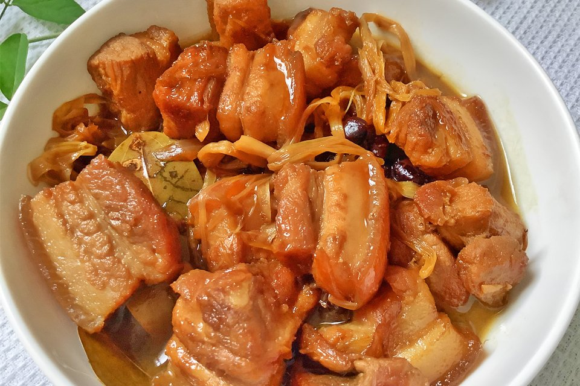

Best served during dinner with lots of rice :)
Ingredients
- one large onion
- garlic
- Pork belly
- Pineapple juice
- Salted black beans
- Soy sauce
- Vinegar
- Banana blossoms
- Dried bay leaves
- Peppercorn
- Sugar
How to Cook Humba
- Dice one large onion and mince 5 cloves of garlic
- Toss in your pork belly and let it cook until it browns
- Add in the onion and garlic slices you have and cook, until your onions soften
- Then, add in your 2 tablespoons of soy sauce, peppercorn, and bay leaves
- Next, pour in 1 cup of pineapple juice and bring your humba to a boil
- Cover the pan and let your dish simmer until your pork becomes tender
- Wait 30 to 40 minutes
- Add in 2 tablespoons of vinegar and wait for your mixture to re-boil
- Let your dish simmer for about 3 minutes, then spoon in the salted black beans
- Add in your brown sugar as well, then give your humba 5 minutes more
- Lastly, take your dried banana blossoms and toss them into the pot
- Wait 5 to 8 minutes and bwala its ready to served
Serve this dish with copious amounts of rice; its bound to be a hit! Share and enjoy it with the rest of your family today!
Return to top
Return to main page